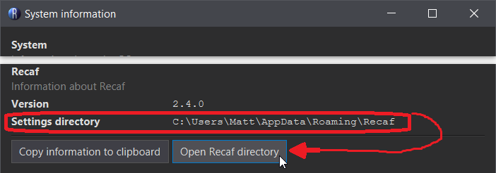

Config
Recaf's application settings can be changed by clicking the "Config" item in the main menu. There are multiple categories of config values. Each category contains one or more values that are displayed as a name, description, and value. The descriptions under each item should be descriptive enough to understand their function.
Where is config stored?
Config values, along with other related files for Recaf, are stored in different locations depending on your operating system.
- Windows:
%APPDATA%/Recaf - Mac:
$HOME/Library/Preferences/Recaf - Linux:
$XDG_CONFIG_HOME/Recaf$HOME/.config/Recafif$XDG_CONFIG_HOMEis not set
Note: You can check where this location is in the system information window, under "Help > System information"
